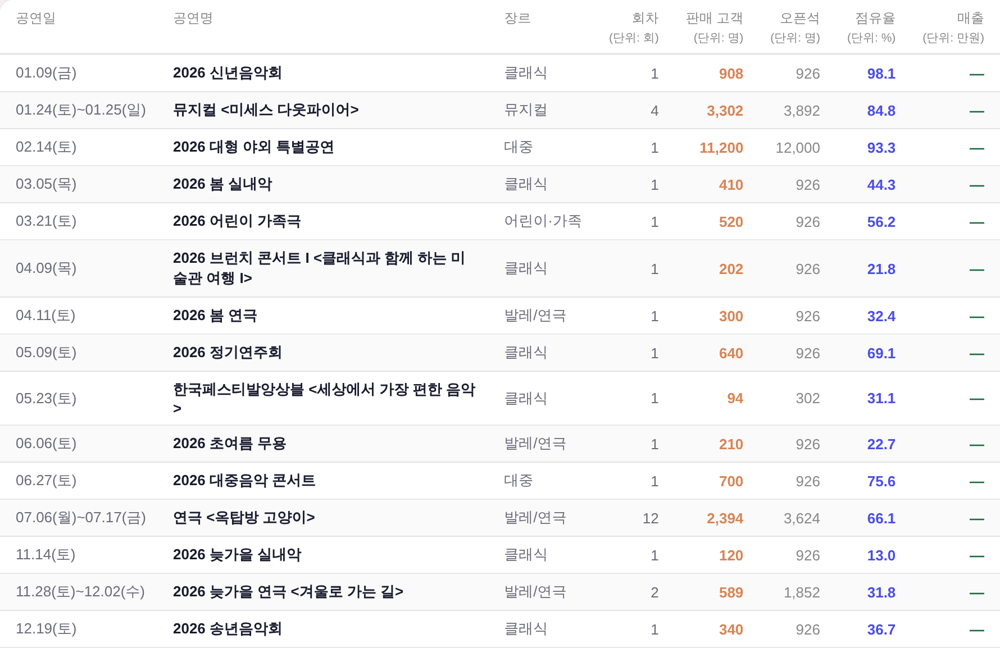
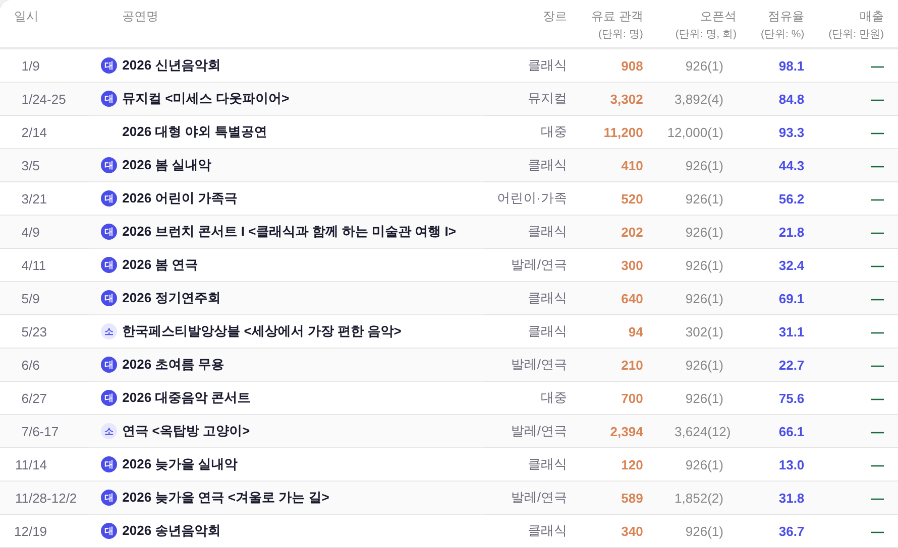
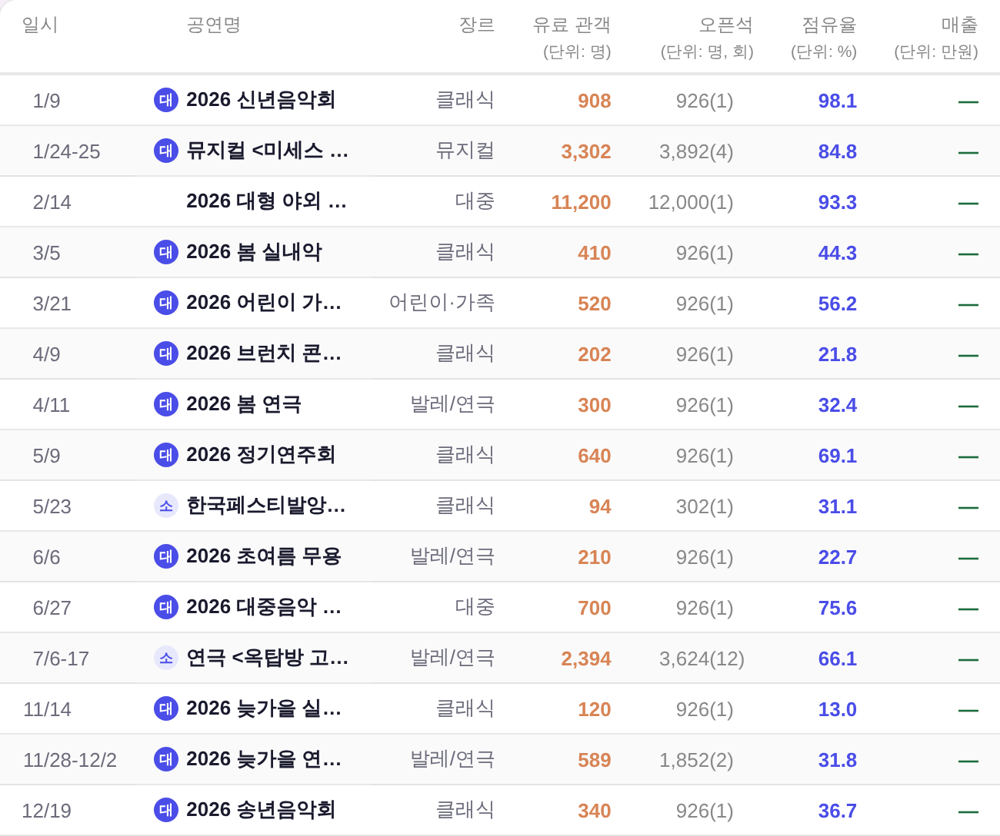

대시보드 3면 우 열 「판매현황 상세」(_bizCompRender(half=2)) · 운영자 지시 260807 ·
화면 = 결정적 목데이터(tools/qa_mock_ops.mjs) ?qa=admin 경로 · 실API·실데이터·PII 미접촉.
열 8개 → 7개. 회차 열이 오픈석 값 안으로 들어가고, 그렇게 번 폭과 일시가 줄어든 폭을 전부 공연명이 가져간다.
| 축 | 전 | 후 |
|---|---|---|
| 일시 | 01.24(토)~01.25(일) | 1/24-25 · 달 넘김은 11/28-12/2 · 앞자리 0 자리로 세로선 정렬 |
| 공연명 | 남는 폭이 없어 3~7행으로 접힘 | 무조건 1행 + 넘치면 … · 앞에 대 소 원형 배지 |
| 장르 | 좌측 정렬 · 공연명 바로 옆 | 우측 정렬 — 구 회차 열 자리까지 밀림 |
| 회차 | 독립 열 (단위: 회) | 열 폐지 → 오픈석 값에 괄호 병기 3,892(4) |
| 오픈석 | (단위: 명) | (단위: 명, 회) |
| 머리글 | 공연일 · 판매 고객 | 일시 · 유료 관객 |
넓은 폭에선 전·후 모두 제목이 1행에 들어간다. 차이 = 일시가 절반으로 줄고, 회차 열이 사라지고, 장르가 오른쪽으로 밀리고, 제목 앞에 극장 배지가 붙는다.


운영자가 캡처한 상태. 전에는 제목이 3~7행으로 접혀 표가 세로로 무너졌다. 후에는 전부 1행 + 말줄임.

한 자리 월을 두 자리 폭의 오른쪽 정렬 상자(min-width:2ch;text-align:right)에 담아, 「앞에 0이 있다고 가정」한 자리를 만든다.
숨은 '0' 글자를 끼우는 방식과 자리는 같고, tabular 숫자를 지원하지 않는 폴백 서체에서도 어긋나지 않는다.
| 행 | 슬래시 x (구현 전 · 숨은 0 방식) | 슬래시 x (구현 후 · 2ch 상자) |
|---|---|---|
1/9 · 4/9 등 한 자리 월 | 1008.45 | 1008.45 |
11/14 · 11/28-12/2 | 1007.48 (−0.97px 어긋남) | 1008.45 |
12/19 | 1008.45 | 1008.47 |
| 세로선 편차 — 전 0.97px → 후 0.02px(서브픽셀 반올림) | ||
tabular-nums 강제 여부와 무관), 어긋난 것은 11 커닝 페어 하나였다 — "11" 13.500px vs "12"·"10"·"00" 14.469px(= 2×7.234) = −0.968px.
그래서 11월 두 행만 슬래시가 왼쪽으로 밀렸다. 숨은 0 방식은 커닝을 못 이긴다 → 상자 방식으로 확정(상자 폭 2ch = 14.469 고정, 안에서 오른쪽 정렬).
상자는 min-width라 두 자리가 2ch보다 넓은 서체를 만나도 겹치지 않고 그 행만 자연폭으로 물러선다.형태 = 캘린더 셀의 공연 원형 배지(16px 원 · 이름 앞 · gap 5px)를 그대로 계승. 두 상태 구분은 기틀 §3.5③대로 색 하나에 안 맡긴다 — 명도 + 글자색 이중단서.
| 상태 | 배지 | 채움 / 잉크 | 대비(WCAG) | 판정 소스 |
|---|---|---|---|---|
| 대극장 | 대 | var(--accent) / var(--surface-solid) | 5.99:1 AA ✓ | ① 프로그램 시트 장소(PERFS.l)② 운영대장 회차당 기본좌석(≤350 소 · ≤1021 대) ③ 근거 없으면 무배지 |
| 소극장 | 소 | var(--accent-light) / var(--accent) | 4.96:1 AA ✓ | |
| 미상(야외 등) | — 빈 자리 | visibility:hidden (자리만 유지) | — |
| 검사 | 결과 | 실측값 |
|---|---|---|
python3 tools/check_design.py | PASS | raw hex index 1578/1578 무변 · :root 2/0 · 고아 9(기존) · 이중정의 1(기존) · 대비 49/49 · 잰크 15/15 — 신규 색·토큰·:root 0 |
node tools/smoke_layout.mjs | PASS | 1920×1080 · 1440×900 · 1366×768 — 이젤 Δ0 · 흰 카드 하단 Δ0 · 안선 밀착 · 흔들림 0 |
python3 tools/check_refs.py | PASS | 라우터·지침 경로 참조 전부 실존 |
python3 tools/check_wiring.py | PASS | 클립 3층·면제표·싱크 프로브 계약 실존 |
| 제목 1행 | PASS | 제목 span 높이 전 행 18px(줄상자 1개) · 행 높이 32.5~33px(첫 행만 32.5 = 서브픽셀 스냅, 1행 여부와 무관) · 1440에서 6/14행이 scrollWidth>clientWidth = … 실렌더(픽셀 대조 확인) |
| 가로 스크롤 | 개선 | 1920·1440·1366·1100 = 넘침 0(개정 전 1366은 42px 넘쳤다). ⚠ 잔존 = 1201~1270px 좁은 띠 40→16px — 공연명 열이 머리글 min-content 81px 아래로 못 줄어드는 구간(개정 전 같은 구간 124~100px = 회귀 아님·개선). 게이트 3해상도가 안 재는 사각 |
tools/qa_mock_ops.mjs에 이 개정이 실제로 지나는 경로 표본 4종을 추가했다 — 없으면 게이트가 새 코드를 한 줄도 안 밟는다.
2026 브런치 콘서트 I <클래식과 함께 하는 미술관 여행 I> → 말줄임 경로11/28-12/2 표기 경로